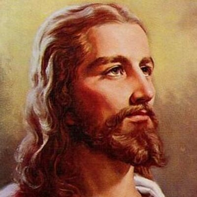

Mt. Bethel Christian Church belongs to a group of churches commonly called the “Christian Churches”or “Churches of Christ.” This group has its roots in the Restoration Movement that came out of Second Great Awakening. One of our mottos is:“In essentials, unity, in opinions, liberty, in all things, love,” What this motto means is that even if you don’t agree with us on every little detail, if you agree on somebasics, we will get along just fine and this might be the place for you! But if you want to know more about us, here are some beliefs we generally hold:
God:
God is our creator and sustainer. He is all powerful and all knowing, all loving, and completely sovereign. He longs to be a deep relationship with us as Father.
Jesus Christ:

Jesus is the Christ (the Messiah – the Savior), the Son of the Living God. He is God as Son, equal to but coming from the Father. He lived to show us how to live, died to forgive us our sins, and rose in victory over Satan and death. Because of this, He ought to be the Lord of our lives.
Holy Spirit:
The Holy Spirit is the third equal part of the Trinity, and comes from the Father and the Son as a gift. He is an Encourager and a Guider, given to all who believe.
The Bible:
The Bible is the inspired Word of God, meaning that it is God’s Word written in man’s words. All Scripture is God-breathed. It is infallible (“The Word of God will not return to Him empty”).
Salvation:
There is only one name under heaven by which we must be saved, and we are saved by grace, by faith in Christ, and not by any work that we can do. We cannot earn our salvation, but we must accept it as a free gift from God.
Baptism:
The New Testament practice of baptism was that of immersion, representing a connection with Christ in our own death, burial, and resurrection. It was only given to those who could be considered “repentant believers” (believer’s baptism), who chose to follow Christ on their own free will. Baptism is essential for salvation, an act of obedience and the final testimony that we have received forgiveness and the Holy Spirit (Acts 2:38).
Communion:
In Matthew 26:26-29, Mark 14:22-25, and Luke 22:14-23 Jesus institutes the practice of communion, also commonly referred to as the Lord’s Supper or the Eucharist. Paul also recounts these words in 1 Corinthians 11:23-26. We practice this act weekly, trying to fulfill the command to “Do this in remembrance of me.” We believe this was the practice of the early church (Acts 2:42, Acts 20:7).